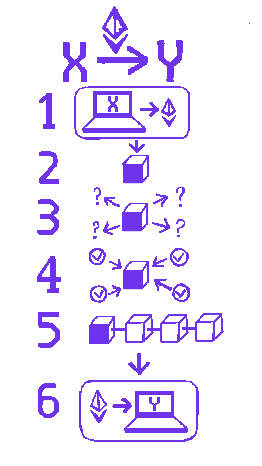

Введение
Что же такое блокчейн? В самом простом виде, блокчейн - это распределенная база данных, которая хранит информацию в виде блоков, с помощью которой возможно внесение информации без её дальнейшего удаления. В основе данной технологии лежит структура данных, состоящая из блоков, содержащих данные, например транзакции. Блоки упорядочены в хронологическом порядке и связаны друг с другом с помощью криптографических хеш-функций, что обеспечивает связь и защиту от несанкционированных изменений.
Основные принципы блокчейн технологии включают децентрализацию, прозрачность и безопасность. Децентрализация означает, что вся информация хранится и подтверждается не одним центральным органом, а распределенной сетью узлов. Прозрачность обеспечивается путем открытости и доступности всей информации в блокчейне для участников сети. Благодаря использованию криптографии и консенсусных механизмов, блокчейн обеспечивает высокий уровень безопасности, минимизируя риски манипуляций и подделок.
Одной из главных областей применения блокчейн технологии являются криптовалюты, примером которой является биткоин. Блокчейн позволяет проводить безопасные и прозрачные транзакции между участниками без необходимости посредников, таких как банки. Однако блокчейн имеет гораздо широкий спектр применения.
Далее будут рассмотрены основные понятия и свойства блокчейн технологии, включая блоки и их содержимое, цепочки блоков, механизм консенсуса PoW и майнинг и пр.

История
Хотя технология блокчейна стала известна благодаря криптовалюте Bitcoin, идеи, лежащие в основе блокчейна, возникли задолго до этого. В 1991 году Стюарт Хабер и Скотт Сторнетта предложили концепцию криптографически защищенной цепочки блоков для хранения данных, которая предотвращала их изменение и подделку. Эта идея была основой для разработки технологии блокчейна в будущем.
В 2008 году под псевдонимом Сатоши Накамото была опубликована статья, описывающая принципы работы криптовалюты Bitcoin. В этой статье Накамото предложил использовать блокчейн для создания децентрализованной системы электронных денег. В 2009 году был запущена сеть Bitcoin, и блокчейн стал реальностью.
После появления Bitcoin многие разработчики начали исследовать возможности блокчейна и создавать свои собственные криптовалюты и блокчейн-платформы. В 2011 году появились первые альтернативные криптовалюты, такие как Litecoin и Namecoin. В 2015 году была запущен Ethereum, который предложил использовать блокчейн не только для криптовалют, но и для создания децентрализованных приложений (DApps) и смарт-контрактов.
С развитием блокчейн-технологии стало ясно, что потенциал не ограничивается криптовалютами. Блокчейн начал использоваться в различных отраслях, таких как финансы, медицина, право, логистика и даже в государственном управлении.
- Управление цепочками поставок: Блокчейн может обеспечить прозрачность и отслеживаемость товаров на всех этапах производства доставки.
- Управление идентификацией: Блокчейн может использоваться для создания децентрализованных систем идентификации, которые обеспечивают безопасность и контроль над личными данными.
- Голосование: Блокчейн может обеспечить прозрачность голосования, предотвращая манипуляции и фальсификации.
- Управление интеллектуальной собственностью: Блокчейн может использоваться для регистрации и защиты авторских прав и патентов.
Основные свойства и понятия
Блокчейн - это инновационная технология, которая обеспечивает децентрализацию, прозраность, надежность, безопасность и неизменяемость данных.
Далее будут рассмотрены основные понятия блокчейна и их взаимосвязь с его ключевыми свойствами.
Распределённость
Распределенность является одним из ключевых свойств блокчейн технологии. Так данные распределены на множестве узлов сети, которые независимо хранят копии блокчейна, что является противоположностью централизованных систем.
Децентрализация относится же к распределению власти и контроля в системе, а также к способу принятия решений. Так ни один отдельный узел не имеет полного контроля над системой. Вместо этого, блокчейн основывается на консенсусе между участниками для достижения согласия по добавлению новых блоков в цепочку.
Распределённость блокчейна приводит к ряду преимуществ:
Безопасность:
Поскольку данные хранятся и распределяются на множестве узлов, блокчейн становится более устойчивым к хакерским атакам и взломам. Для того, чтобы подделать данные, злоумышленник должен изменить данные на большинстве узлов сети, что является практически невозможным.Отказоустойчивость:
Распределенность блокчейна делает его устойчивым к отказам отдельных узлов или некоторых частей сети. Если один или несколько узлов вышли из строя или стали временно недоступны, остальные узлы продолжат работу в штатном режиме.Децентрализация:
Распределенность блокчейна также способствует децентрализации управления и принятия решений. Все узлы сети имеют равные права и могут участвовать в процессе согласования транзакций и поддержке работы сети через консенсусные алгоритмы. Это предотвращает единоличный контроль и централизацию власти.
Таким образом, децентрализация обеспечивает равноправное участие узлов сети в принятии решений, а распределенность - безопасность и отказоустойчивость системы блокчейн.
Основные понятия
Блоки и цепочки блоков являются основными строительными элементами блокчейна. Блок представляет собой набор данных, который содержит информацию о транзакциях, событиях или записях, происходящих в блокчейне. Цепочка блоков, или блокчейн, представляет собой последовательное объединение блоков, где каждый новый блок содержит ссылку на предыдущий.
Содержимое блоков:Данные:
Блок содержит информацию о событиях или транзакциях, которые произошли в определенный момент времени. В блокчейне это могут быть финансовые транзакции, контракты, голосования и другие данные, зависящие от конкретного применения блокчейна.Хеш:
Каждый блок имеет свой хеш, который является уникальной строкой фиксированной длины, созданной с использованием криптографических алгоритмов путем обработки данных блока. Хеш представляет собой "отпечаток" этих данных. Одна из его ключевых особенностей - даже небольшое изменение входных данных приведет к существенному изменению значения хеша, что обеспечивает безопасность и целостность данных.Предыдущий Хеш:
Цепочки блоков формируются путем последовательного связывания блоков друг с другом посредством предыдущего хеша (англ. previous hash). Каждый блок содержит предыдущий хеш, указывающий на хеш предыдущего блока в цепочке, что обеспечивает их связь и последовательность. Изменение данных в предыдущем блоке приведет к изменению его хеша, что также изменит хеши всех последующих блоков, что приведет к их недействительности.Nonce:
Один из ключевых элементов механизма консенсуса (PoW) – nonce, случайное число, которое майнеры изменяют для добавления нового блока в цепочку. Изменение nonce влияет на значение хеша блока в следствие того, что он также является содержимым блока.

Децентрализация: Блокчейн основан на распределенной сети узлов, каждый из которых содержит копию полной цепочки блоков. Это позволяет сохранять данные и контролировать процессы без единой центральной власти. Децентрализация блокчейна обеспечивает устойчивость к отказам, повышает безопасность и исключает односторонние манипуляции. Хеши и предыдущие хеши помогают поддерживать децентрализацию блокчейна. С помощью их проверки узлы могут согласовывать данные и убеждаться в их однородности без необходимости доверять централизованной стороне.
Непреложность данных: Поскольку хеш - уникальное значение, которое зависит от содержимого блока, любое изменение данных приведет и к его трансформации. Каждый блок также содержит предыдущий хеш, который связывает блоки в цепочку. Это позволяет обнаруживать любые попытки подделки или изменения данных в блокчейне, что поддерживает его устойчивость к фальсификациям и обеспечивает целостность данных, так как любое изменение в прошлых блоках автоматически приведет к изменению хешей всех последующих блоков.
Целостность данных: Хеши так же используются для обеспечения целостности данных в блокчейне, участники сети могут проверить целостность данных путем сравнения хешей блоков.
Прозрачность: Блокчейн обеспечивает прозрачность, так как каждый участник сети имеет доступ к полной копии цепочки блоков. Это позволяет проверять и аудировать транзакции и события, что способствует доверию и открытости. Прозрачность блокчейна также помогает предотвращать мошенничество и несанкционированную деятельность.
Масштабируемость: Блоки имеют определенную вместительность, то есть они могут содержать ограниченное количество данных. В зависимости от конкретной реализации блокчейна, вместительность блоков может быть ограничена размером файла или количеством транзакций.
Безопасность: Хеши и предыдущие хеши обеспечивают безопасность блокчейна. Чтобы изменить данные в определенном блоке, злоумышленнику придется пересчитать хеши всех последующих блоков. Это требует вычислительных ресурсов и времени, что делает блокчейн устойчивым к вмешательству и подделке данных.
Блоки, их содержимое и цепочки в блокчейне играют ключевую роль в обеспечении надежности, безопасности и прозрачности системы. Они формируют основу для построения сложных блокчейн-приложений и децентрализованных систем, меняя способы взаимодействия, контроля и управления данными.
Подробнее о Nonce
Nonce (часто используется как сокращение от "number used once") - это случайное число или значение, которое используется в процессе майнинга блоков в блокчейне. В контексте блокчейна, nonce является целым числом, которое майнеры пытаются изменить, чтобы найти определенный хеш блока, удовлетворяющий определенным условиям или требованиям.
Майнинг
Майнинг - это процесс добавления новых блоков в блокчейн путем решения сложных вычислительных задач. Он выполняется майнерами, которые конкурируют друг с другом за право добавить следующий блок. При майнинге они генерируют значения Nonce и применяют их вместе с другими данными блока к хеш-функции. Затем майнеры проверяют полученный хеш на соответствие заданному условию, например, наличию определенного количества ведущих нулей. Если хеш не удовлетворяет условию, майнеры изменяют значение Nonce и повторяют процесс хеширования до тех пор, пока не будет найден хеш, удовлетворяющий условию сложности.
Успешный майнинг с подходящим значением Nonce позволяет майнеру объявить о найденном блоке и добавить его в блокчейн. Когда блок добавлен, его хеш становится предыдущим хешем для следующего блока в цепочке. Таким образом, Nonce играет важную роль в обеспечении целостности блокчейна и связи между блоками. Благодаря процессу майнинга и использованию Nonce, блокчейн обретает свойство неизменности и невозможности подделки данных, поскольку любые изменения в блоках будут приводить к изменению хешей и значений Nonce, что легко обнаруживается сетью.
Консенсус
Консенсус - это процесс достижения единства и согласия между различными участниками сети относительно состояния блокчейна и порядка добавления новых блоков. Одним из наиболее распространенных механизмов консенсуса является доказательство работы (Proof of Work), и майнинг с использованием nonce является его ключевой частью.
Proof-of-Work
Протокол консенсуса Proof-of-Work (PoW) является одним из наиболее распространенных и широко используемых в блокчейне. Proof-of-Work основан на концепции "доказательства выполнения работы". Для того чтобы создать новый блок, участник должен выполнить вычислительно сложную задачу, которая требует значительных вычислительных ресурсов. Эта задача называется "доказательством работы". Proof-of-Work обеспечивает безопасность блокчейна, так как вычислительно сложная задача требует значительного времени и вычислительных ресурсов для ее выполнения. Это делает атаки на блокчейн дорогостоящими и неэффективными. Кроме того, протокол Proof-of-Work обеспечивает равноправность участников, так как каждый майнер имеет шанс создать новый блок, пропорциональный его вычислительной мощности.